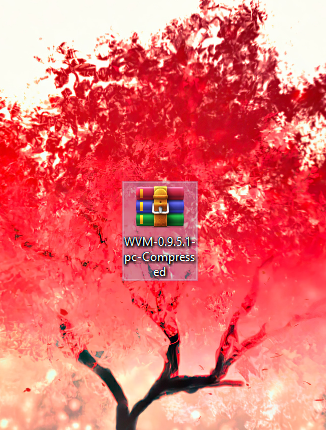
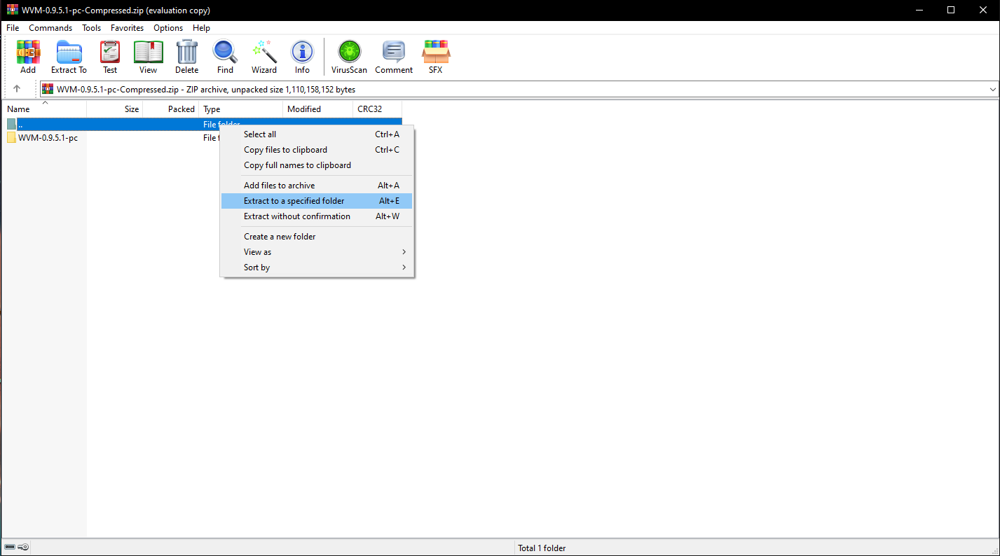

Please read the quick info down below, thanks!
Here you’ll find the links for each game page as well as a link for a mod that makes it easier and more comfortable to play each game. Plus a small tutorial on how to download the games with WinRAR. I would also recommend having an Adblocker on while downloading it all due to the amount of fake popups ads.
Here are the links to each games download page
- Freeloading Family
- Being A DIK
- Double Homework
- A.O.A Academy
Links for the help mods I use
The other two games don't have a need for help mods
Tutorial of how to use WinRAR, for downloading the games
First of all go to the link and download the file of the game, when that's done navigate and find the file in your downloads.
Secondly, click once on the folder icon with two dots to select every file for extraction.
Thirdly, right click on the folder with two dots and then navigate and choose "Extract to a specific folder"
And lastly, choose or create a folder on your desktop to extract the file into. When that's done extracting you'll be ready to play